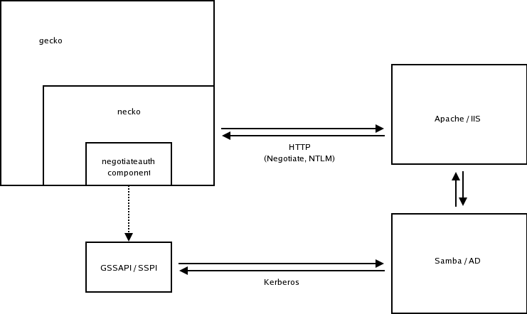

Integrated Authentication
Darin FisherThis document provides an overview of Mozilla's support for integrated authentication. This entails support for the the Simple and Protected GSS-API Negotiation Mechanism (SPNEGO) internet standard (RFC 2478) to negotiate either Kerberos, NTLM, or other authentication protocols supported by the operating system. SPNEGO is commonly referred to as the "negotiate" authentication protocol.
Mozilla does not have its own internal implementation of SPNEGO. Instead, it leverage system libraries that provide SPNEGO: SSPI on Microsoft Windows, and GSS-API on Linux, Mac OSX, and other UNIX-like systems.
The Mozilla implementation of SPNEGO can be found under extensions/auth (it used to live in extensions/negotiateauth).
Flow Diagram
The diagram below shows how various components interact.

Configuration
By default, Mozilla rejects all SPNEGO challenges from a web server. This is to protect the user from the possibility of DNS-spoofing being used to stage a man-in-the-middle exploit (see bug 17578 for more info). Moreover, with Windows clients NTLM may be negotiated as the authentication protocol. So, it is paramount that the browser does not freely exchange NTLM user credentials with any server that requests them. The NTLM response includes a hash of the user's logon credentials. On older versions of Windows this hash is computed using a relatively weak algorithm (see Hertel for more info on NTLM authentication).
Mozilla currently supports a whitelist of sites that are permitted to engage in SPNEGO authentication with the browser. This list is intended to be configured by an IT department prior to distributing Mozilla to end-users.
The preferences are:
pref("network.negotiate-auth.trusted-uris", site-list);
pref("network.negotiate-auth.delegation-uris", site-list);
where, site-list is a comma-separated list of URL prefixes or domains of the form:
site-list = "mydomain.com, https://myotherdomain.com"
network.negotiate-auth.trusted-uris lists the sites that
are permitted to engage in SPNEGO authentication with the browser, and
network.negotiate-auth.delegation-uris lists the sites
for which the browser may delegate user authorization to the server.